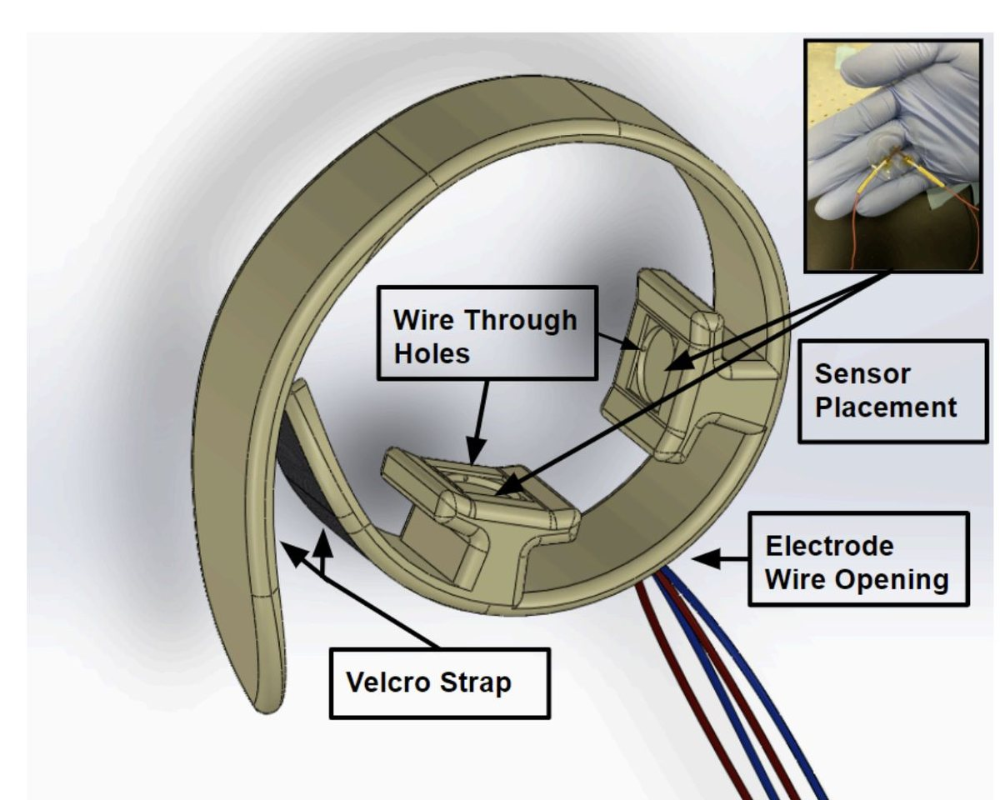
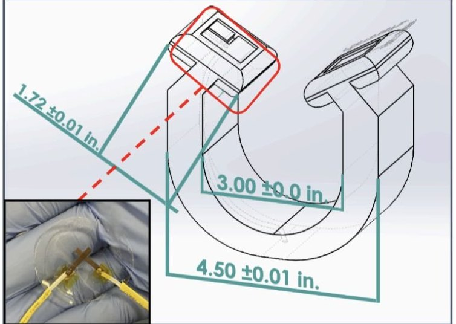
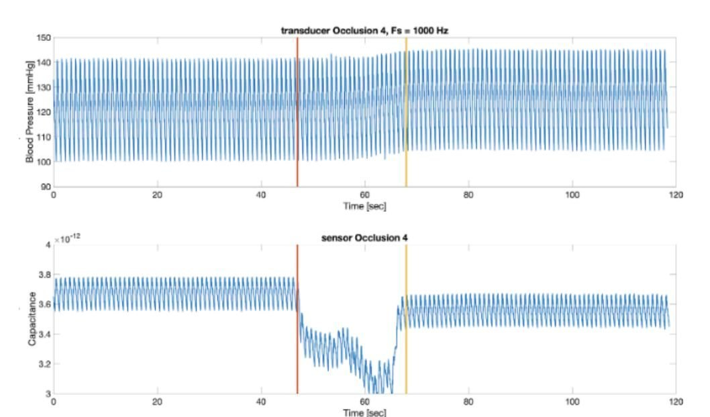

UC Irvine · Senior design · 2019 → 2020
A wearable blood pressure sensor for stroke monitoring
An ischemic stroke needs treatment within about three hours to limit permanent damage, and it can start at any moment. Our senior design team built a wearable design around a new portable blood pressure sensor, so blood pressure can be monitored continuously and a stroke caught early.
- Project
- Senior design
- When
- 2019 to 2020
- Sensor
- Thin-film capacitive
- Testing
- Human models and simulations
The problem
What made it hard
A stroke can begin at any moment, so blood pressure monitoring has to be portable and continuous to catch it early.
A new sensor also has to earn trust. Its signal has to be checked against a reference measurement, including when blood flow is suddenly blocked.
A look at the work
From prototype to test bench



My work
What we built
Wearable housing
A ring-shaped housing with a Velcro strap holds two sensors in place, with through-holes and an opening to route the electrode wires.
Portable sensor
A thin-film capacitive pressure sensor that rests against the skin and follows the pulse.
Occlusion tests
Compared the sensor with a reference pressure transducer while flow was blocked and released.
Reliability testing
Tested the design on human models and in simulations.
Keep exploring
More of my work
- I analyze tremor patient data.Encora Therapeutics
- I analyze mouse brain architecture.PhD dissertation
- I analyze brain-heart connectivity.Undergraduate research
- I analyze synthetic human brain data.BCI hackathon, 2nd place
Engineering projects: Automatic head-fixing home cage